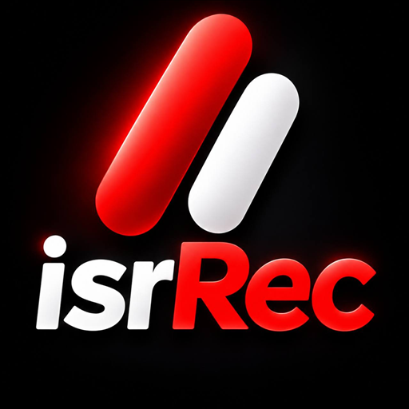

כל שיחת וואטסאפ מוקלטת.
אוטומטית.
באפליקציה אחת. בלי Helper. בלי ללחוץ על כלום.
⬇ הורדה לאנדרואיד מדריך התקנהגרסה 0.1.6 · אנדרואיד 10 ומעלה · חינם
מה RecW עושה
מקליטה לבד
כל שיחת וואטסאפ ווואטסאפ עסקים מוקלטת מהרגע שעונים. בסוף השיחה מופיעה התראה, ולחיצה אחת משמיעה אותה.
החשובות נשמרות לתמיד
סמן ⭐ שיחה חשובה והיא לא תימחק לעולם. את הישנות RecW מוחקת לבד, כך שהטלפון לא מתמלא.
ההקלטות לא יוצאות מהטלפון
אין שרת, אין חשבון, אין מעקב. הקלטה יוצאת מהטלפון רק כשאתה משתף או מגבה אותה לדרייב.
התקנה ב-5 דקות
- מורידים את הקובץלוחצים על "הורדה לאנדרואיד" למעלה, מהטלפון.
- מאשרים התקנה מהדפדפןאנדרואיד ישאל אם לאפשר לדפדפן להתקין אפליקציות. לוחצים "הגדרות" ← מפעילים "אפשר מהמקור הזה" ← חוזרים.
- מתקינים את RecWפתחו את קובץ ההתקנה שהורדתם ופעלו לפי ההנחיות של אנדרואיד.
- פותחים את RecWהאפליקציה מדריכה צעד-צעד: הרשאת נגישות, גישה להתראות ומיקרופון. כל שלב מקבל ✓.
- "הגדרה מוגבלת"? זה תקיןבאנדרואיד 13 ומעלה, לאפליקציה שלא מהחנות צריך לאשר פעם אחת: פרטי אפליקציה ← ⋮ למעלה ← "אפשר הגדרות מוגבלות". RecW מראה בדיוק איפה.
- שיחת בדיקהמתקשרים לחבר בוואטסאפ, מנתקים, ושומעים את ההקלטה. אם שומעים את שני הצדדים — סיימת.
מה עושים אם Play Protect חוסם את ההתקנה?
השאירו את Play Protect פעיל. אם ההתקנה נחסמה, אפשר לפנות אלינו בכתובת isr.service12@gmail.com ולצרף את נוסח ההודעה.
למה לא בחנות של גוגל? הכללים של Google Play לא מאפשרים לאפליקציה אחת להקליט שיחות וואטסאפ, ולכן אפליקציות אחרות דורשות להתקין גם "Helper" נפרד. RecW מופצת מהאתר כקובץ חתום, ולכן היא אפליקציה אחת.
שאלות נפוצות
שומעים את שני הצדדים?
ברוב הטלפונים החדשים כן. נבדק עם שני הצדדים ברורים על Samsung Galaxy S24 Ultra (אנדרואיד 17). בחלק מהטלפונים, בעיקר עם אנדרואיד 10, המערכת לא מאפשרת להקליט ברור את הצד השני: הקול שלך מוקלט טוב והצד השני חלש. בסוף ההתקנה יש שיחת בדיקה שבודקת את זה בטלפון שלך ומנסה כמה הגדרות. אם הטלפון שלך מהסוג הזה, דיבור ברמקול מקליט את שני הצדדים.
מה עם וואטסאפ עסקים?
נתמך. אפשר לכבות את זה בהגדרות.
איפה ההקלטות נשמרות?
בזיכרון הפרטי של האפליקציה בטלפון. אפליקציות אחרות לא רואות אותן. אפשר לשתף הקלטה, או לגבות את השיחות החשובות ל-Google Drive בלחיצה.
כמה שיחות נשמרות?
בוחרים: 20, 50, 100, 200 או הכול. שיחות עם ⭐ לא נמחקות אף פעם.
מה אם ההקלטה נכשלה?
RecW לא נכשלת בשקט. אם הקלטה יוצאת שקטה או שהרשאה כבויה, מופיעה התראה ופס אדום עם כפתור "תקן".
כמה זה עולה?
חינם.
יש לאייפון?
לא. אפל לא מאפשרת להקליט שיחות וואטסאפ באייפון.
מותר להקליט שיחות?
חוקי הקלטת שיחות משתנים בין מדינות. האחריות לשימוש חוקי ב-RecW היא על המשתמש.